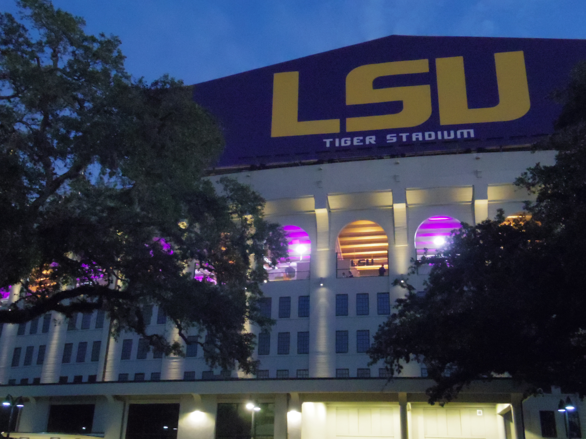

Tiger Stadium, popularly known as Death Valley, is an outdoor stadium located in Baton Rouge, Louisiana on the campus of Louisiana State University. It is the home stadium of the LSU Tigers football team.
Tiger Stadium is well known nationally for having among the best game day atmospheres in college football as well as being one of the most difficult places for an opposing team to play.
With an official seating capacity of 102,321, Tiger Stadium is the sixth-largest stadium in the world by capacity. It is the fifth-largest stadium in the NCAA and the third-largest in the Southeastern Conference, behind Kyle Field at Texas A&M University (106,511 in 2014, 102,512 in 2015) and Neyland Stadium at Tennessee (102,455) and slightly larger than Bryant-Denny Stadium at Alabama (101,821).
